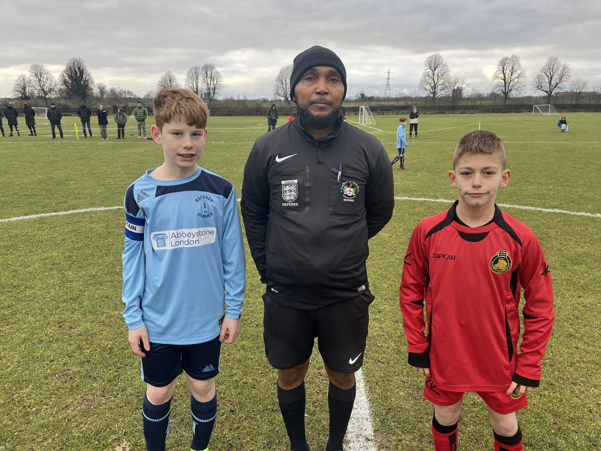
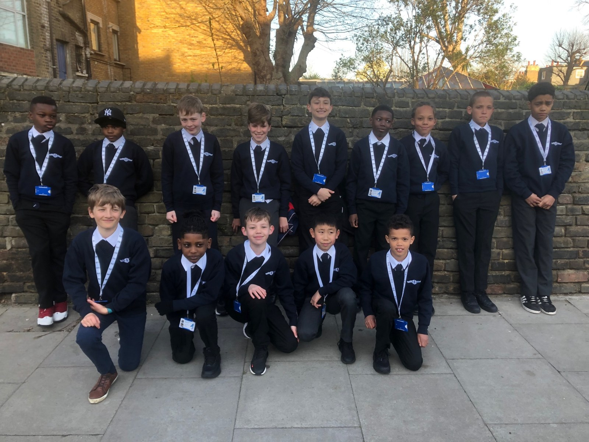
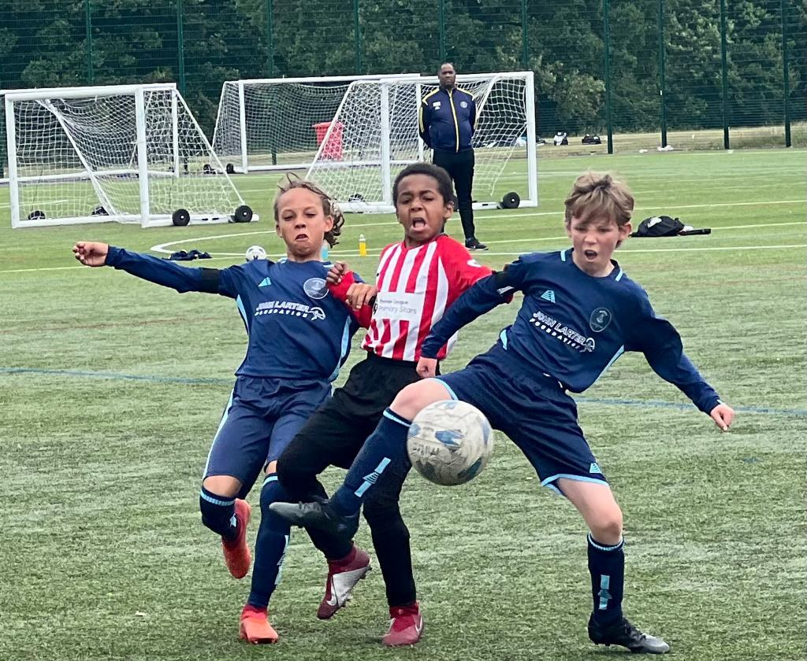

HSAA Mission Statement
The Hackney Schools’ Athletic Association aims to:
- Inculcate a love of sport and provide extra-curricular sport for the schoolchildren of Hackney.
- Foster a spirit of healthy sporting rivalry between schools and districts.
- Underpin all activities with a commitment to equal opportunities, child protection and safeguarding.
HSAA holds public liability insurance to support and protect children taking part in its activities and competitions.

History of Hackney Schools Athletic Association

An account by David LeFevre, drawing on documents by Colm Kerrigan and John Larter MBE. Historical descriptions refer to the period covered by the account.
Records of the early years of the association are at best, sketchy, indeed, after watching the Hackney Schools' swimming display in 1912, the Mayor of Hackney, councillor W. Hammer, J.P., said that although he had lived in Hackney for 30 years he had only that day learned of the existence of the Hackney branch of the London Schools' Swimming Association. The North London Guardian, which reported Councillor Hammer's speech, had begun reporting school sporting events in 1908, when the association appointed a press secretary.
The Hackney and Kingsland Gazette had printed a notice of the formation of a schools' football association for Hackney in December 1891, this was titled 'The Hackney Elementary schools' football Association'. Twelve schools competed for a challenge trophy, the final being played, 'on a special ground granted by the London County Council near the fountain in Victoria Park.' Wilton Road School, Dalston, beat Mowlem Street, Bethnal Green, in the first final.
Organisation of school sports was still a problem in those days, indeed, the purchase of the Hackney Marshes was initiated after the boys of the Eton Mission, Hackney Wick were stopped playing football on the marshes and had their goal-posts carried off.
Another local newspaper to carry reports of Association activities was 'The Football Sun'. This newspaper was part of the 'Sun' newspaper, which in 1898 was bought by Horatio Bottomley, a 'colourful' character in the manner of more recent newspaper proprietors, later to become MP for South Hackney and embroiled in many frauds, scandals and bankruptcies. In 1901 Bottomley put up a trophy for the junior division of the Hackney Schools' league. The same trophy is still contested today surely making it one of the oldest football trophies still contested. Despite his various 'shady' dealings, Bottomley was still a popular Liberal MP, indeed in 1908 just a few months after he had been in court on charges of 'conspiring by false pretences to cheat and defraud' he was unanimously elected a vice-president of the Association.
Cricket was provided as a sport by the Association from the earliest days. The cricket trophy still exists, dating from 1892, when the winners were Daubeney Road School. By 1914 - 43 schools were competing for the cricket trophy.
Read more
From the earliest years, the Association sports day was held at Orient's Millfields ground, featuring championship races for girls as well as boys. In 1913 there were 2,494 entries for the events, and it had been necessary to have qualifying rounds throughout the preceding week at Victoria Park. A feature of the days proceedings noted by the Hackney Gazette was the arrival of the manager and assistant manager of the Hackney Empire, 'whose presence aroused considerable interest amongst the children as they supervised the taking of cinematograph pictures of the races, the winning teams, etc., which are to be produced at the empire this week.'
The boxing section has disappeared since the mid 1970's but for most of the century was of a strength which befits the character of the area. The boxing trophies were presented to the Association by Baroness Burdett-Coutts a Victorian philanthropist who also gave Victoria Park to the people of the impoverished east end of London. The Boxing champions of 1947 were the Kray twins and the strength of the 'art' continued through to the likes of Maurice Hope, Chris Eubank and more recently Jason Matthews. Other sports were added over the years to the portfolio of the Association and in recent years Sports Hall athletics and short tennis competitions have attracted many schools to the Britannia Leisure Centre. The District Sports Hall Athletics team has taken part in the National Championships and has twice won the event.
Written by David LeFevre with reference to documents by Colm Kerrigan and John Larter MBE.
A centenary and a continuing legacy
HSAA celebrated its centenary in 1991 with a special match against neighbours Tower Hamlets at Leyton Orient FC. Founded by teachers who recognised the importance of after-school sport, the association has continued to provide competitions for Hackney primary schools and to oversee the boys’ and girls’ district teams.
George Sparkes and John Larter MBE were long-serving district managers. John managed the district from 1971 to 2020. Steve Herbert took over the running of the district teams in 2020 following John’s death in December that year. The girls’ team had launched in the 2019–20 season.
David Grisdale joined the association in 1968 and served for more than fifty years, including over forty years as Honorary General Secretary, until his death in October 2020.
Read about the people behind HSAA and our district teams’ achievements.
HSAA Executive Committee Members
For information about the current executive committee, get in touch with HSAA.
Association and district figures are recognised in our Illuminaries section.
Contact Us
Contact HSAA for school sport, district football, affiliation and supporting the association.
Contact HSAA
info@hsaa.org.uk ↗Please include your name, school or district, and the sport or competition you are enquiring about.
Schools and affiliation
For entry information and the Young & Active Hackney 2030 programme, contact HSAA and ask for Steve Herbert, Affiliations Officer.
District football
Ask about boys’ and girls’ trials, selection, competitions and tours.
Support and alumni
Find out about supporting HSAA, the District Players Alumni Network or the John Larter MBE Foundation.
